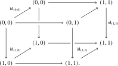

In this section, we provide two fundamental examples of (co)cartesian fibrations: the source and target maps \(\ev_0,\ev_1\colon \Fun([1],C) \to C\) for a category \(C\). The fibers of these two functors are the slice categories \(C_{/x}\) and \(C_{x/}\) constructed in Section 4.3, and the fact that \(\ev_0\) and \(\ev_1\) are a cartesian and a cocartesian fibration, respectively, encodes the functoriality of these slices in \(x\).
We start with an auxiliary result, for which we need to recall the maps \(j_0,j_1\colon \Delta^2 \to [1] \times [1]\) and \(p_0,p_2\colon [1] \times [1] \to \Delta^2\) from Definition 2.1.21 and Construction 2.1.23, pictorially represented by the following diagrams:
Proposition 4.6.1. The map \(j_0\) is a left adjoint section of the map \(p_0\). The map \(j_1\) is a right adjoint section of the map \(p_2\).
Proof
We prove the claim for \(j_1\) and \(p_2\) and leave the analogous case for \(j_0\) and \(p_0\) to the reader. For simplicity we write \(j := j_1\) and \(p := p_2\) for the remainder of this proof. By construction \(j\) is a section of \(p\). We will construct a natural transformation \(\eta\colon \id_{[1] \times [1]} \to jp\), or equivalently a map \[ h\colon ([1] \times [1]) \times [1] \to ([1] \times [1]) \] such that \(h(x,y,0) = (x,y)\) and \(h(x,y,1) = jp(x,y) = (\max(x,y),y)\), where the last equality holds by Lemma 2.1.26. Formally, we may define \(h\) by \[ h(x,y,t) = (\max(\min(t,y),x),y), \] using the maps \(\max\) and \(\min\) from Construction 2.1.11. Indeed, when \(t = 0\), we have \(\min(t,y) = \min(0,y) = 0\), so that the first component is \(\max(0,x) = x\). When \(t = 1\), we have \(\min(t,y) = \min(1,y) = y\), so that the first component is \(\max(y,x)=\max(x,y)\).
Pictorially, we may display \(h\) as the following commutative cube in \([1] \times [1]\) (read from front to back):

Construction 4.6.2. Given a natural transformation \(H\colon [1] \times C \to D\) between two functors \(f,g\colon C \to D\), and a category \(A\), we construct a natural transformation \[ H^*\colon [1] \times \Fun(D,A) \to \Fun(C,A) \] between the precomposition functors \(f^*,g^*\colon \Fun(D,A) \to \Fun(C,A)\) as follows: \[ \Fun(D,A) \xrightarrow{H^*} \Fun([1] \times C, A) \simeq \Fun([1], \Fun(C,A)). \] It is clear that this construction sends identity transformations to identity transformations and compositions of transformations to compositions of transformations.
Theorem 4.6.3. For any category \(C\), the functor \(\ev_0\colon \Fun([1], C) \to C\) is a cartesian fibration. Dually, the functor \(\ev_1\colon \Fun([1],C) \to C\) is a cocartesian fibration.
Proof
We show the statement for \(\ev_0\) and leave the dual case of \(\ev_1\) to the reader. We need to show that the map \[ \vec{\ev}_1^{\ev_0} \colon \Fun([1],\Fun([1],C)) \to C \vectimes{\ev_0} \Fun([1],C) \] admits a right adjoint section. We may identify the source of this map with \(\Fun([1] \times [1], C)\). The target sits by definition in a pullback square and thus we may identify it with \(\Fun(\Lambda^2_1, C)\). Unwinding definitions, we see that the map \(\vec{\ev}_1^{\ev_0}\) factors as where the second map is a trivial fibration by the Segal axiom. It will thus suffice to show that \(j_1^*\) admits a right adjoint section.
We claim that \(p_2^*\) is a right adjoint section of \(j_1^*\). Indeed, we have \(j_1^*p_2^* = (p_2j_1)^* = (\id)^* = \id\). The transformation \(h\colon 1 \to j_1p_2\) gives rise to a transformation \(h^*\colon 1 \to (j_1p_2)^* = p_2^*j_1^*\) via Construction 4.6.2. Furthermore, we have \[ j_1^*h^* = (hj_1)^* = \id_{j_1^*} \qquadtext{ and } h^*p_2^* = (p_2h)^* = \id_{p_2^*}. \] This finishes the proof.
Remark 4.6.4. Pictorially, the functor \(\vec{\ev}^{\ev_0}_1\) may be thought of as the following assignment: Its right adjoint section is given informally by the following assignment:
We will in fact need a slight generalization of Theorem 4.6.3. Given a functor \(f\colon C \to D\), we may consider the directed pullbacks \(C \vectimes{f} D\) and \(D \vectimes{f} C\). They both come equipped with canonical maps to \(D\), which we claim to be (co)cartesian fibrations:
Proposition 4.6.5. For a functor \(f\colon C \to D\), the projection \(\ev_1\colon C \vectimes{f} D \to D\) is a cocartesian fibration, while the projection \(\ev_0\colon D \vectimes{f} C \to D\) is a cartesian fibration.
Proof
By symmetry, it suffices to prove the claim for \(\ev_1\colon C \vectimes{f} D \to D\). We thus need to show that the map \[ \vec{\ev}^{\ev_1}_0\colon \Fun([1],C \vectimes{f} D) \to (C \vectimes{f} D) \vectimes{\ev_1} D \] admits a left adjoint section. The proof is analogous to the proof of Theorem 4.6.3; to make the proof more readable we will explain what happens on objects and leave it to the reader to write a formal proof.
First observe that terms of the category \(\Fun([1],C \vectimes{f} D)\) are pairs \((\alpha, \sigma)\) where \(\alpha\colon x \to x'\) is a morphism in \(C\), and \(\sigma\) is a commutative square in \(D\) of the form
On the other hand, terms of \((C \vectimes{f} D) \vectimes{\pi} D\) are of the form \((x,f(x) \xrightarrow{u} y \xrightarrow{v} z)\), which we might alternatively display as
 The map \(\vec{\ev}^{\ev_1}_0\) is then given by the assignment
The map \(\vec{\ev}^{\ev_1}_0\) is then given by the assignment
 A left adjoint section is then given by the assignment
A left adjoint section is then given by the assignment
 The precise definition of this functor and the fact that it is a left adjoint section proceed just like the (dual version of the) proof of Theorem 4.6.3, using the functors \(j_0\colon \Delta^2 \to [1] \times [1]\) and \(p_0\colon [1] \times [1] \to \Delta^2\).
The precise definition of this functor and the fact that it is a left adjoint section proceed just like the (dual version of the) proof of Theorem 4.6.3, using the functors \(j_0\colon \Delta^2 \to [1] \times [1]\) and \(p_0\colon [1] \times [1] \to \Delta^2\).